<!DOCTYPE html>

<html lang="en" data-content_root="../../../../">
  <head>
    <meta charset="utf-8" />
    <meta name="viewport" content="width=device-width, initial-scale=1.0" /><meta name="viewport" content="width=device-width, initial-scale=1" />
<meta content="Recommended versions: Vivado 2021.1 – Matlab 2022B_U2" name="description" />

    <title>MATLAB Configuration &#8212; System Level Documentation  documentation</title>
    <link rel="stylesheet" type="text/css" href="../../../../_static/pygments.css?v=8e8a900e" />
    <link rel="stylesheet" type="text/css" href="../../../../_static/app.min.css?v=5d595293" />
    <link rel="stylesheet" type="text/css" href="../../../../_static/tabs.css?v=4c969af8" />
    <link rel="stylesheet" type="text/css" href="../../../../_static/graphviz.css?v=4ae1632d" />
    <script src="../../../../_static/tabs.js?v=3ee01567"></script>
    <script async="async" src="../../../../_static/app.umd.js?v=46a18818"></script>
    <link rel="icon" href="../../../../_static/icon.svg"/>
    <link rel="index" title="Index" href="../../../../genindex.html" />
    <link rel="search" title="Search" href="../../../../search.html" />
    <link rel="next" title="EVAL-CN0585-FMCZ" href="../../eval-cn0585-fmcz/index.html" />
    <link rel="prev" title="Digital Template Model" href="../digital-template/index.html" />
   
  
  
  <meta name="repository" content="documentation">
  <meta name="version" content="">
  
    <meta name="page_source_suffix" content=".rst">
  
  
  


<style>
  body {
    
  }

  body.dark {
    
  }

  @media (prefers-color-scheme: dark) {
    body:not(.light) {
      
    }
  }
</style>
  </head>
  
    <body>
  
  <input type="checkbox" id="input-show-toc">
  <input type="checkbox" id="input-show-localtoc">
  <input type="checkbox" id="input-show-repotoc">

  
  <div class="search-area">
    <form action="" method="get">
      <input type="text" name="q" aria-labelledby="search-documentation" value="" autocomplete="off" autocorrect="off" autocapitalize="off" spellcheck="false" role="search" placeholder="Search"/>
      <button class="icon"></button>
    </form>
  </div>
  

  <header>
    <div id="left">
      <label id="show-sidebar" class="icon" for="input-show-toc" title="Show/hide index"></label>
    </div>
    <div id="right">
      <span>
        <a id="logo-org" href="https://analog.com" aria-label="Analog Devices Inc. landing page"></a>
        <div class="vertical-divider"></div>
        
        <label id="show-repotoc" for="input-show-repotoc" title="Show/hide docs" tabindex="0">Docs</label>
        
        <a id="logo" href="../../../../index.html">
          <div>System Level</div>
        </a>
      </span>
      <span class="reverse">
        <label id="show-localtoc" class="icon" for="input-show-localtoc" title="Show/hide contents"></label>
      </span>
    </div>
  </header>


  <div class="repotoc-tree overlay">
    <root>
  <a href="../../../../index.html" class="current">System Level</a>
</root>

  </div>
    <div class="localtoc">
      <div class="tocwrapper">
        <div class="header localtoc-header">
          <a id="scroll-up" href="#top-anchor" title="Back to top"></a>
        </div>
        <nav>
          <ul>
<li><a class="reference internal" href="#">MATLAB Configuration</a><ul>
<li><a class="reference internal" href="#configuring-custom-hdl-models-using-simulink">Configuring Custom HDL Models using Simulink</a><ul>
<li><a class="reference internal" href="#prerequisites">Prerequisites</a></li>
<li><a class="reference internal" href="#instructions-to-build-the-toolbox-from-terminal">Instructions to build the toolbox from terminal</a></li>
<li><a class="reference internal" href="#creating-boot-bin-from-simulink-model">Creating BOOT.BIN from Simulink Model</a></li>
<li><a class="reference internal" href="#register-access-options">Register Access Options</a><ul>
<li><a class="reference internal" href="#pyadi-iio">PyADI-IIO</a></li>
<li><a class="reference internal" href="#matlab">MATLAB</a></li>
<li><a class="reference internal" href="#simulink">Simulink</a></li>
</ul>
</li>
</ul>
</li>
</ul>
</li>
</ul>

        </nav>
      </div>
    </div>

  
      <div class="sphinxsidebar" role="navigation" aria-label="Main">
        <div class="sphinxsidebarwrapper">
    <a id="no-logo" href="../../../../index.html">
      System Level Documentation
    </a><input id="input-switch-toc" type="checkbox">
<label id="show-repotoc" for="input-switch-toc">
All content
</label>
<label id="show-toc" for="input-switch-toc">
Content on this topic
</label>
<div class="repotoc-tree">
  <root>
  <a href="../../../../index.html" class="current">System Level</a>
</root>

</div>
<div class="toc-tree">
  <html>
  <body><p class="caption" role="heading"><span class="caption-text">Kuiper &amp; Linux Kernel</span></p>
<ul>
<li class="toctree-l1"><input class="toctree-collapse" type="checkbox" name="toctree-collapse-1" id="toctree-collapse-1"/><div class="collapse"><a class="reference internal" href="../../../../linux/drivers/index.html">Linux drivers</a><label for="toctree-collapse-1"><div class="icon"></div></label></div><ul>
<li class="toctree-l2"><input class="toctree-collapse" type="checkbox" name="toctree-collapse-1-1" id="toctree-collapse-1-1"/><div class="collapse"><a class="reference internal" href="../../../../linux/drivers/iio-adc/index.html">IIO ADC</a><label for="toctree-collapse-1-1"><div class="icon"></div></label></div><ul>
<li class="toctree-l3"><a class="reference internal" href="../../../../linux/drivers/iio-adc/ad4052/index.html">AD4052</a></li>
<li class="toctree-l3"><a class="reference internal" href="../../../../linux/drivers/iio-adc/ad9084/index.html">AD9084/AD9088</a></li>
</ul>
</li>
<li class="toctree-l2"><input class="toctree-collapse" type="checkbox" name="toctree-collapse-1-2" id="toctree-collapse-1-2"/><div class="collapse"><a class="reference internal" href="../../../../linux/drivers/iio-transceiver/index.html">IIO Transceivers</a><label for="toctree-collapse-1-2"><div class="icon"></div></label></div><ul>
<li class="toctree-l3"><input class="toctree-collapse" type="checkbox" name="toctree-collapse-1-2-1" id="toctree-collapse-1-2-1"/><div class="collapse"><a class="reference internal" href="../../../../linux/drivers/iio-transceiver/adrv9009/index.html">ADRV9009, ADRV9008-1, ADRV9008-2</a><label for="toctree-collapse-1-2-1"><div class="icon"></div></label></div><ul>
<li class="toctree-l4"><a class="reference internal" href="../../../../linux/drivers/iio-transceiver/adrv9009/customization.html">Customization</a></li>
</ul>
</li>
</ul>
</li>
<li class="toctree-l2"><input class="toctree-collapse" type="checkbox" name="toctree-collapse-1-3" id="toctree-collapse-1-3"/><div class="collapse"><a class="reference internal" href="../../../../linux/drivers/iio/index.html">Linux Industrial I/O Subsystem</a><label for="toctree-collapse-1-3"><div class="icon"></div></label></div><ul>
<li class="toctree-l3"><a class="reference internal" href="../../../../linux/drivers/iio/iio-trig-sysfs.html">iio-trig-sysfs driver</a></li>
<li class="toctree-l3"><a class="reference internal" href="../../../../linux/drivers/iio/iio-trig-bfin-timer.html">iio-trig-bfin-timer driver</a></li>
</ul>
</li>
</ul>
</li>
<li class="toctree-l1"><input class="toctree-collapse" type="checkbox" name="toctree-collapse-2" id="toctree-collapse-2"/><div class="collapse"><a class="reference internal" href="../../../../linux/kernel/index.html">Kernel and devicetrees</a><label for="toctree-collapse-2"><div class="icon"></div></label></div><ul>
<li class="toctree-l2"><a class="reference internal" href="../../../../linux/kernel/zynq.html">Build Zynq</a></li>
<li class="toctree-l2"><a class="reference internal" href="../../../../linux/kernel/zynqmp.html">Build ZynqMP</a></li>
<li class="toctree-l2"><a class="reference internal" href="../../../../linux/kernel/microblaze.html">Build MicroBlaze</a></li>
<li class="toctree-l2"><input class="toctree-collapse" type="checkbox" name="toctree-collapse-2-1" id="toctree-collapse-2-1"/><div class="collapse"><a class="reference internal" href="../../../../linux/kernel/petalinux.html">Build with Petalinux</a><label for="toctree-collapse-2-1"><div class="icon"></div></label></div><ul>
<li class="toctree-l3"><input class="toctree-collapse" type="checkbox" name="toctree-collapse-2-1-1" id="toctree-collapse-2-1-1"/><div class="collapse"><a class="reference internal" href="../../../../linux/kernel/petalinux-dts/index.html">Petalinux Device Trees</a><label for="toctree-collapse-2-1-1"><div class="icon"></div></label></div><ul>
<li class="toctree-l4"><a class="reference internal" href="../../../../linux/kernel/petalinux-dts/petalinux-custom-dts.html">Custom Device Trees with meta-adi</a></li>
<li class="toctree-l4"><a class="reference internal" href="../../../../linux/kernel/petalinux-dts/petalinux-meta-adi-bypass.html">Custom Device Trees with DTG (meta-adi Bypass)</a></li>
<li class="toctree-l4"><a class="reference internal" href="../../../../linux/kernel/petalinux-dts/petalinux-system-user.html">Device Tree Modifications with system-user.dtsi</a></li>
</ul>
</li>
</ul>
</li>
</ul>
</li>
<li class="toctree-l1"><input class="toctree-collapse" type="checkbox" name="toctree-collapse-3" id="toctree-collapse-3"/><div class="collapse"><a class="reference internal" href="../../../../linux/kuiper/index.html">Kuiper Linux</a><label for="toctree-collapse-3"><div class="icon"></div></label></div><ul>
<li class="toctree-l2"><a class="reference internal" href="../../../../linux/kuiper/release-notes.html">Release notes</a></li>
<li class="toctree-l2"><a class="reference internal" href="../../../../linux/kuiper/sdcard/index.html">SD card flashing</a></li>
<li class="toctree-l2"><a class="reference internal" href="../../../../linux/kuiper/project-list.html">Project list</a></li>
<li class="toctree-l2"><a class="reference internal" href="../../../../linux/kuiper/update.html">Updating</a></li>
</ul>
</li>
</ul>
<p class="caption" role="heading"><span class="caption-text">Software</span></p>
<ul>
<li class="toctree-l1"><input class="toctree-collapse" type="checkbox" name="toctree-collapse-4" id="toctree-collapse-4"/><div class="collapse"><a class="reference internal" href="../../../../software/iio-oscilloscope/index.html">IIO Oscilloscope</a><label for="toctree-collapse-4"><div class="icon"></div></label></div><ul>
<li class="toctree-l2"><input class="toctree-collapse" type="checkbox" name="toctree-collapse-4-1" id="toctree-collapse-4-1"/><div class="collapse"><a class="reference internal" href="../../../../software/iio-oscilloscope/adrv9009/index.html">ADRV9009</a><label for="toctree-collapse-4-1"><div class="icon"></div></label></div><ul>
<li class="toctree-l3"><a class="reference internal" href="../../../../software/iio-oscilloscope/adrv9009/plugin.html">Standard Plugin</a></li>
<li class="toctree-l3"><a class="reference internal" href="../../../../software/iio-oscilloscope/adrv9009/advanced-plugin.html">Advanced plugin</a></li>
</ul>
</li>
</ul>
</li>
<li class="toctree-l1"><input class="toctree-collapse" type="checkbox" name="toctree-collapse-5" id="toctree-collapse-5"/><div class="collapse"><a class="reference internal" href="../../../../software/libiio/index.html">Libiio</a><label for="toctree-collapse-5"><div class="icon"></div></label></div><ul>
<li class="toctree-l2"><a class="reference internal" href="../../../../software/libiio/internals.html">About libiio</a></li>
<li class="toctree-l2"><a class="reference internal" href="../../../../software/libiio/cli.html">Command line utility</a></li>
<li class="toctree-l2"><a class="reference internal" href="../../../../software/libiio/tips-tricks.html">Tips &amp; Tricks</a></li>
</ul>
</li>
<li class="toctree-l1"><input class="toctree-collapse" type="checkbox" name="toctree-collapse-6" id="toctree-collapse-6"/><div class="collapse"><a class="reference internal" href="../../../../software/libm2k/index.html">Libm2k</a><label for="toctree-collapse-6"><div class="icon"></div></label></div><ul>
<li class="toctree-l2"><a class="reference internal" href="../../../../software/libm2k/calibration.html">Calibration</a></li>
<li class="toctree-l2"><a class="reference internal" href="../../../../software/libm2k/digital_communication.html">Digital communication</a></li>
<li class="toctree-l2"><a class="reference internal" href="../../../../software/libm2k/m2kcli.html">Command line utility</a></li>
</ul>
</li>
<li class="toctree-l1"><input class="toctree-collapse" type="checkbox" name="toctree-collapse-7" id="toctree-collapse-7"/><div class="collapse"><a class="reference internal" href="../../../../software/matlab/index.html">MATLAB &amp; Simulink Toolboxes</a><label for="toctree-collapse-7"><div class="icon"></div></label></div><ul>
<li class="toctree-l2"><a class="reference internal" href="../../../../software/matlab/hsx-toolbox/index.html">High Speed Converter Toolbox</a></li>
<li class="toctree-l2"><a class="reference internal" href="../../../../software/matlab/transceiver-toolbox/index.html">Transceiver Toolbox</a></li>
<li class="toctree-l2"><a class="reference internal" href="../../../../software/matlab/bsp-extend.html">Extending Device Interfaces</a></li>
</ul>
</li>
<li class="toctree-l1"><a class="reference internal" href="../../../../software/pyadi-iio/index.html">PyADI-IIO</a></li>
<li class="toctree-l1"><input class="toctree-collapse" type="checkbox" name="toctree-collapse-8" id="toctree-collapse-8"/><div class="collapse"><a class="reference internal" href="../../../../software/zephyr/index.html">Zephyr RTOS</a><label for="toctree-collapse-8"><div class="icon"></div></label></div><ul>
<li class="toctree-l2"><a class="reference internal" href="../../../../software/zephyr/zephyr-devicetree.html">Intro to Devicetree</a></li>
<li class="toctree-l2"><a class="reference internal" href="../../../../software/zephyr/kconfig/zephyr-kconfig.html">Introduction to Kconfig</a></li>
<li class="toctree-l2"><a class="reference internal" href="../../../../software/zephyr/using-zephyr-codefusion-fs/zephyr_codefusion_fs.html">Using Zephyr &amp; Codefusion Studio to Partition a Flash Filesystem</a></li>
</ul>
</li>
</ul>
<p class="caption" role="heading"><span class="caption-text">Evaluation Boards</span></p>
<ul>
<li class="toctree-l1"><input class="toctree-collapse" type="checkbox" name="toctree-collapse-9" id="toctree-collapse-9"/><div class="collapse"><a class="reference internal" href="../../../../eval/user-guide/index.html">User guides</a><label for="toctree-collapse-9"><div class="icon"></div></label></div><ul>
<li class="toctree-l2"><input class="toctree-collapse" type="checkbox" name="toctree-collapse-9-1" id="toctree-collapse-9-1"/><div class="collapse"><a class="reference internal" href="../../../../eval/user-guide/adc/ad4052-ardz/index.html">EVAL-AD4050/AD4052-ARDZ</a><label for="toctree-collapse-9-1"><div class="icon"></div></label></div><ul>
<li class="toctree-l3"><a class="reference internal" href="../../../../eval/user-guide/adc/ad4052-ardz/user-guide.html">Evaluating the device</a></li>
</ul>
</li>
<li class="toctree-l2"><a class="reference internal" href="../../../../eval/user-guide/adc/ad9084-ebz/index.html">EVAL-AD9084-EBZ</a></li>
<li class="toctree-l2"><a class="reference internal" href="../../../../eval/user-guide/mem/adxl355-pmdz/index.html">EVAL-ADXL355-PMDZ</a></li>
<li class="toctree-l2"><input class="toctree-collapse" type="checkbox" name="toctree-collapse-9-2" id="toctree-collapse-9-2"/><div class="collapse"><a class="reference internal" href="../../../../eval/user-guide/transceiver/adrv9009/index.html">ADRV9009 &amp; ADRV9008</a><label for="toctree-collapse-9-2"><div class="icon"></div></label></div><ul>
<li class="toctree-l3"><a class="reference internal" href="../../../../eval/user-guide/transceiver/adrv9009/prerequisites.html">Prerequisites</a></li>
<li class="toctree-l3"><input class="toctree-collapse" type="checkbox" name="toctree-collapse-9-2-1" id="toctree-collapse-9-2-1"/><div class="collapse"><a class="reference internal" href="../../../../eval/user-guide/transceiver/adrv9009/quickstart/index.html">Quickstart</a><label for="toctree-collapse-9-2-1"><div class="icon"></div></label></div><ul>
<li class="toctree-l4"><a class="reference internal" href="../../../../eval/user-guide/transceiver/adrv9009/quickstart/zynqmp.html">ZCU102</a></li>
</ul>
</li>
<li class="toctree-l3"><a class="reference internal" href="../../../../eval/user-guide/transceiver/adrv9009/basic-iq-datafiles.html">Basic IQ Datafiles</a></li>
</ul>
</li>
<li class="toctree-l2"><input class="toctree-collapse" type="checkbox" name="toctree-collapse-9-3" id="toctree-collapse-9-3"/><div class="collapse"><a class="reference internal" href="../../../../eval/user-guide/transceiver/adrv9026/index.html">ADRV9026 &amp; ADRV9029</a><label for="toctree-collapse-9-3"><div class="icon"></div></label></div><ul>
<li class="toctree-l3"><a class="reference internal" href="../../../../eval/user-guide/transceiver/adrv9026/prerequisites.html">Prerequisites</a></li>
<li class="toctree-l3"><input class="toctree-collapse" type="checkbox" name="toctree-collapse-9-3-1" id="toctree-collapse-9-3-1"/><div class="collapse"><a class="reference internal" href="../../../../eval/user-guide/transceiver/adrv9026/quickstart/index.html">Quickstart</a><label for="toctree-collapse-9-3-1"><div class="icon"></div></label></div><ul>
<li class="toctree-l4"><a class="reference internal" href="../../../../eval/user-guide/transceiver/adrv9026/quickstart/zynqmp.html">ZCU102</a></li>
<li class="toctree-l4"><a class="reference internal" href="../../../../eval/user-guide/transceiver/adrv9026/quickstart/versal.html">VCK190</a></li>
</ul>
</li>
</ul>
</li>
</ul>
</li>
</ul>
<p class="caption" role="heading"><span class="caption-text">Products &amp; Tools</span></p>
<ul>
<li class="toctree-l1"><input class="toctree-collapse" type="checkbox" name="toctree-collapse-10" id="toctree-collapse-10"/><div class="collapse"><a class="reference internal" href="../../../../tools/m2k/index.html">ADALM2000</a><label for="toctree-collapse-10"><div class="icon"></div></label></div><ul>
<li class="toctree-l2"><a class="reference internal" href="../../../../tools/m2k/devs/index.html">For Developers</a></li>
<li class="toctree-l2"><a class="reference internal" href="../../../../tools/m2k/users/index.html">For End Users</a></li>
<li class="toctree-l2"><a class="reference internal" href="../../../../tools/m2k/help_support.html">Support</a></li>
<li class="toctree-l2"><a class="reference internal" href="../../../../tools/m2k/labview.html">Using With LabVIEW</a></li>
<li class="toctree-l2"><a class="reference internal" href="../../../../tools/m2k/matlab.html">Using with MATLAB</a></li>
</ul>
</li>
<li class="toctree-l1"><input class="toctree-collapse" type="checkbox" name="toctree-collapse-11" id="toctree-collapse-11"/><div class="collapse"><a class="reference internal" href="../../../../tools/pluto-m2k/index.html">Common PLUTO&amp;M2K</a><label for="toctree-collapse-11"><div class="icon"></div></label></div><ul>
<li class="toctree-l2"><a class="reference internal" href="../../../../tools/pluto-m2k/building_the_image.html">Building the Firmware Image</a></li>
<li class="toctree-l2"><a class="reference internal" href="../../../../tools/pluto-m2k/drivers.html">Installing Drivers</a></li>
<li class="toctree-l2"><a class="reference internal" href="../../../../tools/pluto-m2k/firmware.html">Firmware Updates</a></li>
<li class="toctree-l2"><a class="reference internal" href="../../../../tools/pluto-m2k/obtaining_the_sources.html">Obtaining the Build Sources</a></li>
<li class="toctree-l2"><a class="reference internal" href="../../../../tools/pluto-m2k/reboot.html">Rebooting</a></li>
<li class="toctree-l2"><a class="reference internal" href="../../../../tools/pluto-m2k/usb_otg_host.html">USB OTG – HOST function Support</a></li>
</ul>
</li>
<li class="toctree-l1"><input class="toctree-collapse" type="checkbox" name="toctree-collapse-12" id="toctree-collapse-12"/><div class="collapse"><a class="reference internal" href="../../../../tools/pluto/index.html">ADALM-PLUTO</a><label for="toctree-collapse-12"><div class="icon"></div></label></div><ul>
<li class="toctree-l2"><input class="toctree-collapse" type="checkbox" name="toctree-collapse-12-1" id="toctree-collapse-12-1"/><div class="collapse"><a class="reference internal" href="../../../../tools/pluto/devs/index.html">For Developers</a><label for="toctree-collapse-12-1"><div class="icon"></div></label></div><ul>
<li class="toctree-l3"><a class="reference internal" href="../../../../tools/pluto/devs/usb_otg.html">USB OTG</a></li>
</ul>
</li>
<li class="toctree-l2"><input class="toctree-collapse" type="checkbox" name="toctree-collapse-12-2" id="toctree-collapse-12-2"/><div class="collapse"><a class="reference internal" href="../../../../tools/pluto/hacking/index.html">For Hackers</a><label for="toctree-collapse-12-2"><div class="icon"></div></label></div><ul>
<li class="toctree-l3"><a class="reference internal" href="../../../../tools/pluto/hacking/hardware.html">ADALM-PLUTO Hardware</a></li>
<li class="toctree-l3"><a class="reference internal" href="../../../../tools/pluto/hacking/listening_to_yourself.html">Self Reception</a></li>
<li class="toctree-l3"><a class="reference internal" href="../../../../tools/pluto/hacking/power_amp.html">Controlling External Devices</a></li>
</ul>
</li>
<li class="toctree-l2"><input class="toctree-collapse" type="checkbox" name="toctree-collapse-12-3" id="toctree-collapse-12-3"/><div class="collapse"><a class="reference internal" href="../../../../tools/pluto/users/index.html">For End Users</a><label for="toctree-collapse-12-3"><div class="icon"></div></label></div><ul>
<li class="toctree-l3"><a class="reference internal" href="../../../../tools/pluto/users/antennas.html">Antennas</a></li>
</ul>
</li>
<li class="toctree-l2"><a class="reference internal" href="../../../../tools/pluto/help_support.html">Support</a></li>
<li class="toctree-l2"><a class="reference internal" href="../../../../tools/pluto/prerequisites.html">Prerequisites</a></li>
<li class="toctree-l2"><a class="reference internal" href="../../../../tools/pluto/transceiver_transferring_data.html">Controlling the transceiver and transferring data</a></li>
</ul>
</li>
<li class="toctree-l1"><a class="reference internal" href="../../../../tools/uartjtag/index.html">ADALM-UARTJTAG</a></li>
</ul>
<p class="caption" role="heading"><span class="caption-text">Apps &amp; Solutions</span></p>
<ul class="current">
<li class="toctree-l1"><a class="reference internal" href="../../../application-software/index.html">Application Software</a></li>
<li class="toctree-l1 current"><input class="toctree-collapse" type="checkbox" name="toctree-collapse-13" id="toctree-collapse-13" checked=""/><div class="collapse"><a class="reference internal" href="../../index.html">Reference Designs</a><label for="toctree-collapse-13"><div class="icon"></div></label></div><ul class="current">
<li class="toctree-l2"><input class="toctree-collapse" type="checkbox" name="toctree-collapse-13-1" id="toctree-collapse-13-1"/><div class="collapse"><a class="reference internal" href="../../ad-acevsecrdset-sl/index.html">AD-ACEVSECRDSET-SL</a><label for="toctree-collapse-13-1"><div class="icon"></div></label></div><ul>
<li class="toctree-l3"><a class="reference internal" href="../../ad-acevsecrdset-sl/hardware-guide/index.html">Hardware User Guide</a></li>
<li class="toctree-l3"><a class="reference internal" href="../../ad-acevsecrdset-sl/software-guide/index.html">Software User Guide</a></li>
</ul>
</li>
<li class="toctree-l2"><input class="toctree-collapse" type="checkbox" name="toctree-collapse-13-2" id="toctree-collapse-13-2"/><div class="collapse"><a class="reference internal" href="../../ad-apard32690-sl/index.html">AD-APARD32690-SL</a><label for="toctree-collapse-13-2"><div class="icon"></div></label></div><ul>
<li class="toctree-l3"><a class="reference internal" href="../../ad-apard32690-sl/ad-t1lusb-ebz/index.html">AD-T1LUSB2.0-EBZ</a></li>
<li class="toctree-l3"><a class="reference internal" href="../../ad-apard32690-sl/nina-w102/index.html">NINA-W102 Networking Support</a></li>
</ul>
</li>
<li class="toctree-l2"><input class="toctree-collapse" type="checkbox" name="toctree-collapse-13-3" id="toctree-collapse-13-3"/><div class="collapse"><a class="reference internal" href="../../ad-bmse2e3w-sl/index.html">AD-BMSE2E3W-SL</a><label for="toctree-collapse-13-3"><div class="icon"></div></label></div><ul>
<li class="toctree-l3"><a class="reference internal" href="../../ad-bmse2e3w-sl/sample_application/index.html">Sample Application</a></li>
<li class="toctree-l3"><a class="reference internal" href="../../ad-bmse2e3w-sl/software_guide/index.html">Software User Guide</a></li>
</ul>
</li>
<li class="toctree-l2"><input class="toctree-collapse" type="checkbox" name="toctree-collapse-13-4" id="toctree-collapse-13-4"/><div class="collapse"><a class="reference internal" href="../../ad-cellpackbm-sl/index.html">AD-CELLPACKBM-SL</a><label for="toctree-collapse-13-4"><div class="icon"></div></label></div><ul>
<li class="toctree-l3"><a class="reference internal" href="../../ad-cellpackbm-sl/hardware_guide/index.html">Hardware User Guide</a></li>
<li class="toctree-l3"><a class="reference internal" href="../../ad-cellpackbm-sl/software_guide/index.html">Software User Guide</a></li>
</ul>
</li>
<li class="toctree-l2"><a class="reference internal" href="../../ad-gmsl-d-e-adp/index.html">AD-GMSL-D-E-ADP#</a></li>
<li class="toctree-l2"><input class="toctree-collapse" type="checkbox" name="toctree-collapse-13-5" id="toctree-collapse-13-5"/><div class="collapse"><a class="reference internal" href="../../ad-gmsl522-sl/index.html">AD-GMSL522-SL</a><label for="toctree-collapse-13-5"><div class="icon"></div></label></div><ul>
<li class="toctree-l3"><a class="reference internal" href="../../ad-gmsl522-sl/hardware-guide/index.html">Hardware Guide</a></li>
<li class="toctree-l3"><a class="reference internal" href="../../ad-gmsl522-sl/software-guide/index.html">Software Guide</a></li>
</ul>
</li>
<li class="toctree-l2"><a class="reference internal" href="../../ad-gmsl716mipi-evk/index.html">AD-GMSL716MIPI-EVK</a></li>
<li class="toctree-l2"><a class="reference internal" href="../../ad-gmsl717mipi-evk/index.html">AD-GMSL717MIPI-EVK</a></li>
<li class="toctree-l2"><input class="toctree-collapse" type="checkbox" name="toctree-collapse-13-6" id="toctree-collapse-13-6"/><div class="collapse"><a class="reference internal" href="../../ad-gmslcamrpi-adp/index.html">AD-GMSLCAMRPI-ADP#</a><label for="toctree-collapse-13-6"><div class="icon"></div></label></div><ul>
<li class="toctree-l3"><a class="reference internal" href="../../ad-gmslcamrpi-adp/amd-kria/index.html">Using with AMD Kria</a></li>
<li class="toctree-l3"><a class="reference internal" href="../../ad-gmslcamrpi-adp/nvidia-jetson/index.html">Using with Nvidia Jetson Orin Nano</a></li>
<li class="toctree-l3"><a class="reference internal" href="../../ad-gmslcamrpi-adp/raspberry-pi-user-guide/index.html">Using with Raspberry Pi</a></li>
</ul>
</li>
<li class="toctree-l2"><input class="toctree-collapse" type="checkbox" name="toctree-collapse-13-7" id="toctree-collapse-13-7"/><div class="collapse"><a class="reference internal" href="../../ad-paarray3552r-sl/index.html">AD-PAARRAY3552R-SL</a><label for="toctree-collapse-13-7"><div class="icon"></div></label></div><ul>
<li class="toctree-l3"><a class="reference internal" href="../../ad-paarray3552r-sl/hardware-guide/index.html">Hardware User Guide</a></li>
<li class="toctree-l3"><a class="reference internal" href="../../ad-paarray3552r-sl/software-guide/index.html">Software User Guide</a></li>
</ul>
</li>
<li class="toctree-l2"><input class="toctree-collapse" type="checkbox" name="toctree-collapse-13-8" id="toctree-collapse-13-8"/><div class="collapse"><a class="reference internal" href="../../ad-pqmon-sl/index.html">AD-PQMON-SL</a><label for="toctree-collapse-13-8"><div class="icon"></div></label></div><ul>
<li class="toctree-l3"><a class="reference internal" href="../../ad-pqmon-sl/hardware-guide/index.html">Hardware User Guide</a></li>
<li class="toctree-l3"><a class="reference internal" href="../../ad-pqmon-sl/software-guide/index.html">Software User Guide</a></li>
</ul>
</li>
<li class="toctree-l2"><input class="toctree-collapse" type="checkbox" name="toctree-collapse-13-9" id="toctree-collapse-13-9"/><div class="collapse"><a class="reference internal" href="../../ad-r1m/index.html">AD-R1M</a><label for="toctree-collapse-13-9"><div class="icon"></div></label></div><ul>
<li class="toctree-l3"><a class="reference internal" href="../../ad-r1m/quick-start-guide.html">AD-R1M Quick Start Guide</a></li>
<li class="toctree-l3"><a class="reference internal" href="../../ad-r1m/use-cases.html">AD-R1M Use Case Examples</a></li>
<li class="toctree-l3"><a class="reference internal" href="../../ad-r1m/hardware-guide.html">AD-R1M Hardware Guide</a></li>
<li class="toctree-l3"><a class="reference internal" href="../../ad-r1m/system-setup.html">AD-R1M System Setup</a></li>
<li class="toctree-l3"><input class="toctree-collapse" type="checkbox" name="toctree-collapse-13-9-1" id="toctree-collapse-13-9-1"/><div class="collapse"><a class="reference internal" href="../../ad-r1m/software-guide.html">AD-R1M Software Guide</a><label for="toctree-collapse-13-9-1"><div class="icon"></div></label></div><ul>
<li class="toctree-l4"><a class="reference internal" href="../../ad-r1m/software-guide/ros2-getting-started.html">AD-R1M ROS 2 Getting Started</a></li>
<li class="toctree-l4"><a class="reference internal" href="../../ad-r1m/software-guide/ros2-examples.html">AD-R1M ROS2 examples</a></li>
<li class="toctree-l4"><a class="reference internal" href="../../ad-r1m/software-guide/ros2-architecture.html">AD-R1M ROS2 Architecture</a></li>
</ul>
</li>
<li class="toctree-l3"><input class="toctree-collapse" type="checkbox" name="toctree-collapse-13-9-2" id="toctree-collapse-13-9-2"/><div class="collapse"><a class="reference internal" href="../../ad-r1m/advanced-usage.html">AD-R1M Advanced Usage</a><label for="toctree-collapse-13-9-2"><div class="icon"></div></label></div><ul>
<li class="toctree-l4"><a class="reference internal" href="../../ad-r1m/advanced-usage/linux-system.html">AD-R1M Linux system structure (kernel, configs, services, docker)</a></li>
<li class="toctree-l4"><a class="reference internal" href="../../ad-r1m/advanced-usage/ros2-writing-your-own-nodes.html">Writing your own ROS 2 nodes for AD-R1M</a></li>
</ul>
</li>
<li class="toctree-l3"><a class="reference internal" href="../../ad-r1m/troubleshooting.html">AD-R1M Troubleshooting</a></li>
</ul>
</li>
<li class="toctree-l2"><input class="toctree-collapse" type="checkbox" name="toctree-collapse-13-10" id="toctree-collapse-13-10"/><div class="collapse"><a class="reference internal" href="../../ad-swiot1l-sl/index.html">AD-SWIOT1L-SL</a><label for="toctree-collapse-13-10"><div class="icon"></div></label></div><ul>
<li class="toctree-l3"><a class="reference internal" href="../../ad-swiot1l-sl/hardware-guide/index.html">Hardware User Guide</a></li>
<li class="toctree-l3"><a class="reference internal" href="../../ad-swiot1l-sl/software-guide/index.html">Software User Guide</a></li>
</ul>
</li>
<li class="toctree-l2"><input class="toctree-collapse" type="checkbox" name="toctree-collapse-13-11" id="toctree-collapse-13-11"/><div class="collapse"><a class="reference internal" href="../../admv96s-wgbe-ek1/index.html">ADMV96S-WGBE-EK1</a><label for="toctree-collapse-13-11"><div class="icon"></div></label></div><ul>
<li class="toctree-l3"><a class="reference internal" href="../../admv96s-wgbe-ek1/hardware-guide/index.html">Hardware User Guide</a></li>
<li class="toctree-l3"><a class="reference internal" href="../../admv96s-wgbe-ek1/software-guide/index.html">Software User Guide</a></li>
</ul>
</li>
<li class="toctree-l2"><input class="toctree-collapse" type="checkbox" name="toctree-collapse-13-12" id="toctree-collapse-13-12"/><div class="collapse"><a class="reference internal" href="../../adrd3161/index.html">ADRD3161</a><label for="toctree-collapse-13-12"><div class="icon"></div></label></div><ul>
<li class="toctree-l3"><a class="reference internal" href="../../adrd3161/quick-start-guide.html">ADRD3161 Quick Start Guide</a></li>
<li class="toctree-l3"><a class="reference internal" href="../../adrd3161/hardware-guide.html">ADRD3161 Hardware Guide</a></li>
<li class="toctree-l3"><a class="reference internal" href="../../adrd3161/software-guide.html">ADRD3161 Software Guide</a></li>
<li class="toctree-l3"><a class="reference internal" href="../../adrd3161/troubleshooting.html">ADRD3161 Troubleshooting</a></li>
<li class="toctree-l3"><a class="reference internal" href="../../adrd3161/canopen.html">ADRD3161 CANopen reference</a></li>
<li class="toctree-l3"><a class="reference internal" href="../../adrd3161/production-guide.html">ADRD3161 Production Guide</a></li>
</ul>
</li>
<li class="toctree-l2"><input class="toctree-collapse" type="checkbox" name="toctree-collapse-13-13" id="toctree-collapse-13-13"/><div class="collapse"><a class="reference internal" href="../../adrd4161/index.html">ADRD4161</a><label for="toctree-collapse-13-13"><div class="icon"></div></label></div><ul>
<li class="toctree-l3"><a class="reference internal" href="../../adrd4161/quick-start-guide.html">ADRD4161 Quick Start Guide</a></li>
<li class="toctree-l3"><a class="reference internal" href="../../adrd4161/hardware-guide.html">ADRD4161 Hardware Guide</a></li>
<li class="toctree-l3"><a class="reference internal" href="../../adrd4161/software-guide.html">ADRD4161 Software Guide</a></li>
</ul>
</li>
<li class="toctree-l2"><input class="toctree-collapse" type="checkbox" name="toctree-collapse-13-14" id="toctree-collapse-13-14"/><div class="collapse"><a class="reference internal" href="../../adrd5161/index.html">ADRD5161</a><label for="toctree-collapse-13-14"><div class="icon"></div></label></div><ul>
<li class="toctree-l3"><a class="reference internal" href="../../adrd5161/quick-start-guide.html">ADRD5161 Quick Start Guide</a></li>
<li class="toctree-l3"><a class="reference internal" href="../../adrd5161/hardware-guide.html">ADRD5161 Hardware Guide</a></li>
<li class="toctree-l3"><a class="reference internal" href="../../adrd5161/software-guide.html">ADRD5161 Software Guide</a></li>
<li class="toctree-l3"><a class="reference internal" href="../../adrd5161/canopen.html">ADRD5161 CANopen reference</a></li>
</ul>
</li>
<li class="toctree-l2"><a class="reference internal" href="../../adrd8012-01Z/index.html">ADRD8012-01Z</a></li>
<li class="toctree-l2"><input class="toctree-collapse" type="checkbox" name="toctree-collapse-13-15" id="toctree-collapse-13-15"/><div class="collapse"><a class="reference internal" href="../../eval-adbms6830bmsw/index.html">EVAL-ADBMS6830BMSW</a><label for="toctree-collapse-13-15"><div class="icon"></div></label></div><ul>
<li class="toctree-l3"><a class="reference internal" href="../../eval-adbms6830bmsw/software-guide/index.html">Software User Guide</a></li>
</ul>
</li>
<li class="toctree-l2"><input class="toctree-collapse" type="checkbox" name="toctree-collapse-13-16" id="toctree-collapse-13-16"/><div class="collapse"><a class="reference internal" href="../../eval-cn0503-ardz/index.html">EVAL-CN0503-ARDZ</a><label for="toctree-collapse-13-16"><div class="icon"></div></label></div><ul>
<li class="toctree-l3"><a class="reference internal" href="../../eval-cn0503-ardz/cn0503-software/index.html">Software User Guide</a></li>
<li class="toctree-l3"><a class="reference internal" href="../../eval-cn0503-ardz/fluorescence-measurement/index.html">Fluorescence Measurement Demo</a></li>
<li class="toctree-l3"><a class="reference internal" href="../../eval-cn0503-ardz/nitrate-measurement/index.html">Nitrate Measurement Demo</a></li>
<li class="toctree-l3"><a class="reference internal" href="../../eval-cn0503-ardz/pH-measurement/index.html">pH Measurement Demo</a></li>
<li class="toctree-l3"><a class="reference internal" href="../../eval-cn0503-ardz/turbidity/index.html">Turbidity Measurement Demo</a></li>
</ul>
</li>
<li class="toctree-l2"><a class="reference internal" href="../../eval-cn0565-ardz/index.html">EVAL-CN0565-ARDZ</a></li>
<li class="toctree-l2"><a class="reference internal" href="../../eval-cn0575-rpiz/index.html">EVAL-CN0575-RPIZ</a></li>
<li class="toctree-l2"><a class="reference internal" href="../../eval-cn0577-fmcz/index.html">EVAL-CN0577-FMCZ</a></li>
<li class="toctree-l2"><a class="reference internal" href="../../eval-cn0581-ebz/index.html">EVAL-CN0581-EBZ</a></li>
<li class="toctree-l2 current"><input class="toctree-collapse" type="checkbox" name="toctree-collapse-13-17" id="toctree-collapse-13-17" checked=""/><div class="collapse"><a class="reference internal" href="../index.html">EVAL-CN0584-EBZ</a><label for="toctree-collapse-13-17"><div class="icon"></div></label></div><ul class="current">
<li class="toctree-l3"><a class="reference internal" href="../digital-template/index.html">Digital Template Model</a></li>
<li class="toctree-l3 current"><a class="current reference internal" href="#">MATLAB Configuration</a></li>
</ul>
</li>
<li class="toctree-l2"><a class="reference internal" href="../../eval-cn0585-fmcz/index.html">EVAL-CN0585-FMCZ</a></li>
<li class="toctree-l2"><a class="reference internal" href="../../eval-ess1-sys/index.html">EVAL-ESS1-SYS</a></li>
<li class="toctree-l2"><input class="toctree-collapse" type="checkbox" name="toctree-collapse-13-18" id="toctree-collapse-13-18"/><div class="collapse"><a class="reference internal" href="../../eval-isomax/index.html">EVAL-ISOMAX</a><label for="toctree-collapse-13-18"><div class="icon"></div></label></div><ul>
<li class="toctree-l3"><a class="reference internal" href="../../eval-isomax/hardware_guide/index.html">Hardware User Guide</a></li>
<li class="toctree-l3"><a class="reference internal" href="../../eval-isomax/software_guide/index.html">Software User Guide</a></li>
</ul>
</li>
<li class="toctree-l2"><input class="toctree-collapse" type="checkbox" name="toctree-collapse-13-19" id="toctree-collapse-13-19"/><div class="collapse"><a class="reference internal" href="../../eval-ltpa-kit/index.html">EVAL-LTPA-KIT (LTpowerAnalyzer Kit)</a><label for="toctree-collapse-13-19"><div class="icon"></div></label></div><ul>
<li class="toctree-l3"><a class="reference internal" href="../../eval-ltpa-kit/hardware_guide/index.html">EVAL-LTPA-KIT Hardware User Guide</a></li>
<li class="toctree-l3"><a class="reference internal" href="../../eval-ltpa-kit/software_guide/index.html">EVAL-LTPA-KIT Software Guide</a></li>
</ul>
</li>
</ul>
</li>
</ul>
<p class="caption" role="heading"><span class="caption-text">University Program</span></p>
<ul>
<li class="toctree-l1"><input class="toctree-collapse" type="checkbox" name="toctree-collapse-14" id="toctree-collapse-14"/><div class="collapse"><a class="reference internal" href="../../../../university/index.html">Engineering University Program</a><label for="toctree-collapse-14"><div class="icon"></div></label></div><ul>
<li class="toctree-l2"><input class="toctree-collapse" type="checkbox" name="toctree-collapse-14-1" id="toctree-collapse-14-1"/><div class="collapse"><a class="reference internal" href="../../../../university/active_learning/index.html">Active Learning: Student-oriented Lab Exercises</a><label for="toctree-collapse-14-1"><div class="icon"></div></label></div><ul>
<li class="toctree-l3"><a class="reference internal" href="../../../../university/active_learning/wien_bridge_oscillator/index.html">Activity: The Wien Bridge Oscillator</a></li>
<li class="toctree-l3"><a class="reference internal" href="../../../../university/active_learning/efficiency_power_loss/index.html">Activity: Efficiency, Power Loss, and Thermal Management</a></li>
</ul>
</li>
</ul>
</li>
</ul>
<p class="caption" role="heading"><span class="caption-text">Learning</span></p>
<ul>
<li class="toctree-l1"><input class="toctree-collapse" type="checkbox" name="toctree-collapse-15" id="toctree-collapse-15"/><div class="collapse"><a class="reference internal" href="../../../../learning/index.html">Learning! Tutorials, Workshops, Etc</a><label for="toctree-collapse-15"><div class="icon"></div></label></div><ul>
<li class="toctree-l2"><a class="reference internal" href="../../../../learning/tutorial_prec_adc/index.html">Precision ADC Tutorial</a></li>
<li class="toctree-l2"><a class="reference internal" href="../../../../learning/converter_connectivity_tutorial/index.html">Converter Connectivity Tutorial</a></li>
<li class="toctree-l2"><a class="reference internal" href="../../../../learning/sw_infrastructure/index.html">Software Infrastructure for designing with ADCs, DACs, and Sensors</a></li>
<li class="toctree-l2"><a class="reference internal" href="../../../../learning/tools_for_ls/index.html">Tools for Low Speed Mixed Signal System Design</a></li>
<li class="toctree-l2"><a class="reference internal" href="../../../../learning/tools_for_prec_wb/index.html">Tools for Precision Wideband Mixed Signal System Design</a></li>
<li class="toctree-l2"><a class="reference internal" href="../../../../learning/tools_for_hs/index.html">Tools for High-Speed Mixed Signal System Design</a></li>
<li class="toctree-l2"><a class="reference internal" href="../../../../learning/workshop_what_sw_for_sdr/index.html">What software do I need for my SDR?</a></li>
<li class="toctree-l2"><a class="reference internal" href="../../../../learning/workshop_a_precision_converter_fpga_integration_journey/index.html">A Precision Converter FPGA Integration Journey</a></li>
<li class="toctree-l2"><a class="reference internal" href="../../../../learning/workshops_software_defined_instrumentation/index.html">Software Defined Instrumentation</a></li>
<li class="toctree-l2"><a class="reference internal" href="../../../../learning/workshops_introduction_to_electronics/index.html">Introduction to Electronics</a></li>
<li class="toctree-l2"><a class="reference internal" href="../../../../learning/workshops_embedded_baremetal/index.html">Embedded Baremetal</a></li>
<li class="toctree-l2"><a class="reference internal" href="../../../../learning/workshops_embedded_linux/index.html">Embedded Linux</a></li>
</ul>
</li>
</ul>
<p class="caption" role="heading"><span class="caption-text">Contributing and Guidelines</span></p>
<ul>
<li class="toctree-l1"><input class="toctree-collapse" type="checkbox" name="toctree-collapse-16" id="toctree-collapse-16"/><div class="collapse"><a class="reference internal" href="../../../../contributing/creating_new_pages.html">Creating new pages</a><label for="toctree-collapse-16"><div class="icon"></div></label></div><ul>
<li class="toctree-l2"><a class="reference internal" href="../../../../contributing/template/eval.html">Evaluation Boards</a></li>
</ul>
</li>
<li class="toctree-l1"><a class="reference internal" href="../../../../contributing/docs_guidelines.html">Documentation guidelines</a></li>
<li class="toctree-l1"><a class="reference internal" href="../../../../contributing/forking_publishing.html">Forking and publishing</a></li>
</ul>
</body>
</html>

</div>
        </div>
      </div>

  <div class="document">
      <div class="documentwrapper">
        <div class="bodywrapper" id="top-anchor">
          <div class="body-header">
  <nav class="breadcrumb"><ol><li><a href="../../index.html">Reference Designs</a></li><li><a href="../index.html">EVAL-CN0584-EBZ</a></li></ol></nav>
</div>
          <div class="body" role="main">
            
  <section id="matlab-configuration">
<span id="eval-cn0584-ebz-matlab-configuration"></span><h1>MATLAB Configuration<a class="headerlink" href="#matlab-configuration" title="Link to this heading"></a></h1>
<section id="configuring-custom-hdl-models-using-simulink">
<h2>Configuring Custom HDL Models using Simulink<a class="headerlink" href="#configuring-custom-hdl-models-using-simulink" title="Link to this heading"></a></h2>
<section id="prerequisites">
<h3>Prerequisites<a class="headerlink" href="#prerequisites" title="Link to this heading"></a></h3>
<ul class="simple">
<li><p>Recommended versions: Vivado 2021.1 – Matlab 2022B_U2</p></li>
<li><p>Recommended terminal for Windows: Cygwin (<a class="icon link reference external" href="https://cygwin.com" target="_blank">https://cygwin.com</a>)</p></li>
<li><p>Make sure that the Vitis 2021.1 is installed.</p></li>
<li><p>The latest branch: <a class="icon git reference external" href="https://github.com/analogdevicesinc/HighSpeedConverterToolbox/tree/cn0585_v1/" target="_blank">ADI High Speed Converter Toolbox repository’s branch cn0585_v1</a></p></li>
</ul>
<p>Make sure that the “SoC Blockset” and “SoC Blockset Support Package for Xilinx
Devices” Add-ons are installed.</p>
<figure class="align-default" id="id1">
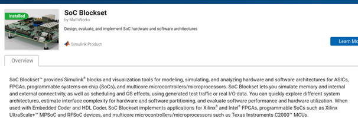
<figcaption>
<p><span class="caption-number">Figure 1 </span><span class="caption-text">SoC Blockset Add-On</span><a class="headerlink" href="#id1" title="Link to this image"></a></p>
</figcaption>
</figure>
<figure class="align-default" id="id2">
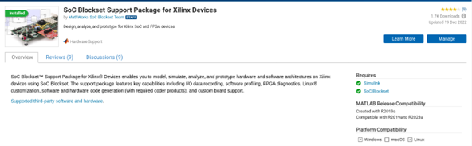
<figcaption>
<p><span class="caption-number">Figure 2 </span><span class="caption-text">SoC Blockset Support Package for Xilinx Devices Add-On</span><a class="headerlink" href="#id2" title="Link to this image"></a></p>
</figcaption>
</figure>
</section>
<section id="instructions-to-build-the-toolbox-from-terminal">
<h3>Instructions to build the toolbox from terminal<a class="headerlink" href="#instructions-to-build-the-toolbox-from-terminal" title="Link to this heading"></a></h3>
<p><strong>1.1</strong> Make a clone of the HDL repo and checkout the desired branch</p>
<div class="code-shell"><div><div class="no-select float-left highlight-default notranslate"><div class="highlight"><pre><span></span>~$
</pre></div>
</div>
<div class="highlight-bash notranslate"><div class="highlight"><pre><span></span>git<span class="w"> </span>clone<span class="w"> </span>https://github.com/analogdevicesinc/HighSpeedConverterToolbox.git
</pre></div>
</div>
<div class="clear-left"></div></div><div><div class="no-select float-left highlight-default notranslate"><div class="highlight"><pre><span></span>~$
</pre></div>
</div>
<div class="highlight-bash notranslate"><div class="highlight"><pre><span></span><span class="nb">cd</span><span class="w"> </span>HighSpeedConverterToolbox
</pre></div>
</div>
<div class="clear-left"></div></div><div><div class="no-select float-left highlight-default notranslate"><div class="highlight"><pre><span></span>~/HighSpeedConverterToolbox$
</pre></div>
</div>
<div class="highlight-bash notranslate"><div class="highlight"><pre><span></span>git<span class="w"> </span>submodule<span class="w"> </span>update<span class="w"> </span>--init<span class="w"> </span>--recursive
</pre></div>
</div>
<div class="clear-left"></div></div><div><div class="no-select float-left highlight-default notranslate"><div class="highlight"><pre><span></span>~/HighSpeedConverterToolbox$
</pre></div>
</div>
<div class="highlight-bash notranslate"><div class="highlight"><pre><span></span>git<span class="w"> </span>checkout<span class="w"> </span>cn0585_v1
</pre></div>
</div>
<div class="clear-left"></div></div></div><p>To avoid tool mismatches, before opening MATLAB set this variable in the
terminal:</p>
<div class="code-shell"><div><div class="no-select float-left highlight-default notranslate"><div class="highlight"><pre><span></span>~/HighSpeedConverterToolbox$
</pre></div>
</div>
<div class="highlight-bash notranslate"><div class="highlight"><pre><span></span><span class="nb">export</span><span class="w"> </span><span class="nv">ADI_IGNORE_VERSION_CHECK</span><span class="o">=</span>TRUE
</pre></div>
</div>
<div class="clear-left"></div></div></div><p>Build according to the branch</p>
<div class="code-shell"><div><div class="no-select float-left highlight-default notranslate"><div class="highlight"><pre><span></span>~/HighSpeedConverterToolbox$
</pre></div>
</div>
<div class="highlight-bash notranslate"><div class="highlight"><pre><span></span><span class="nb">cd</span><span class="w"> </span>CI/scripts
</pre></div>
</div>
<div class="clear-left"></div></div><div><div class="no-select float-left highlight-default notranslate"><div class="highlight"><pre><span></span>~/HighSpeedConverterToolbox/CI/scripts$
</pre></div>
</div>
<div class="highlight-bash notranslate"><div class="highlight"><pre><span></span>make<span class="w"> </span>build<span class="w"> </span><span class="nv">HDLBRANCH</span><span class="o">=</span>cn0585_v1
</pre></div>
</div>
<div class="clear-left"></div></div></div><p><strong>1.2</strong> In Matlab current folder list, navigate to the folder where
the files had been copied from previous step. Launch MATLAB in the root of the
HighSpeedConverterToolbox folder:</p>
<div class="code-shell"><div><div class="no-select float-left highlight-default notranslate"><div class="highlight"><pre><span></span>~/HighSpeedConverterToolbox/CI/scripts$
</pre></div>
</div>
<div class="highlight-bash notranslate"><div class="highlight"><pre><span></span><span class="nb">cd</span><span class="w"> </span>../../
</pre></div>
</div>
<div class="clear-left"></div></div><div><div class="no-select float-left highlight-default notranslate"><div class="highlight"><pre><span></span>~/HighSpeedConverterToolbox$
</pre></div>
</div>
<div class="highlight-bash notranslate"><div class="highlight"><pre><span></span>matlab<span class="w"> </span>.
</pre></div>
</div>
<div class="clear-left"></div></div></div></section>
<section id="creating-boot-bin-from-simulink-model">
<h3>Creating BOOT.BIN from Simulink Model<a class="headerlink" href="#creating-boot-bin-from-simulink-model" title="Link to this heading"></a></h3>
<figure class="align-default" id="id3">
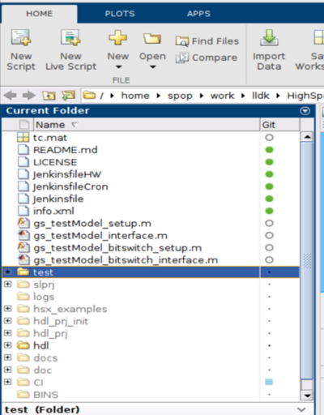
<figcaption>
<p><span class="caption-number">Figure 3 </span><span class="caption-text">HighSpeedConverterToolbox Sources</span><a class="headerlink" href="#id3" title="Link to this image"></a></p>
</figcaption>
</figure>
<p><strong>2.1</strong> Right click on test -&gt; Add to Path -&gt; Selected folders and subfolders.
Right click on hdl -&gt; Add to Path -&gt; Selected folders and subfolders.</p>
<p><strong>2.2</strong> In the Matlab command window set the path to Vivado installation folder. The tool
path should be replaced with the user’s Vivado path.</p>
<p>For example:</p>
<div class="highlight-matlab notranslate"><div class="highlight"><pre><span></span><span class="n">hdlsetuptoolpath</span><span class="p">(</span>‘<span class="n">ToolName</span>’<span class="p">,</span><span class="w"> </span>‘<span class="n">Xilinx</span><span class="w"> </span><span class="n">Vivado</span>’<span class="p">,</span><span class="w"> </span>’<span class="n">ToolPath</span>’<span class="p">,</span>
‘<span class="o">&lt;/</span><span class="n">opt</span><span class="o">/</span><span class="n">Xilinx</span><span class="o">/</span><span class="n">Vivado</span><span class="o">/</span><span class="mf">2021.1</span><span class="o">/</span><span class="n">bin</span><span class="o">/</span><span class="n">vivado</span><span class="o">&gt;</span>’<span class="p">)</span>
</pre></div>
</div>
<p><strong>2.3</strong> Expand the test folder and double click on the desired Simulink test
model, as shown in Figure 4.</p>
<figure class="align-default" id="id4">
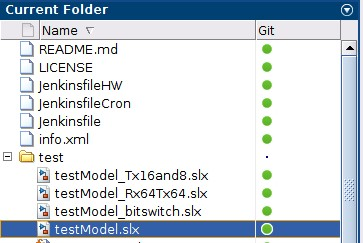
<figcaption>
<p><span class="caption-number">Figure 4 </span><span class="caption-text">Simulink Test Model</span><a class="headerlink" href="#id4" title="Link to this image"></a></p>
</figcaption>
</figure>
<p><strong>2.4</strong> After opening the Simulink model, right click on the <code class="docutils literal notranslate"><span class="pre">HDL_DUT</span></code> and launch
the HDL Workflow Advisor as shown in Figure 5, and Figure 6.</p>
<figure class="align-default" id="id5">
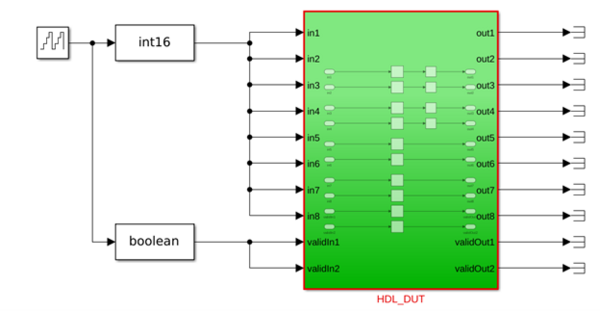
<figcaption>
<p><span class="caption-number">Figure 5 </span><span class="caption-text">Simulink Device Under Test</span><a class="headerlink" href="#id5" title="Link to this image"></a></p>
</figcaption>
</figure>
<figure class="align-default" id="id6">
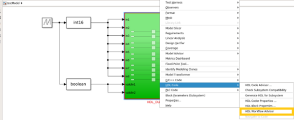
<figcaption>
<p><span class="caption-number">Figure 6 </span><span class="caption-text">HDL Workflow Advisor Launching</span><a class="headerlink" href="#id6" title="Link to this image"></a></p>
</figcaption>
</figure>
<p><strong>2.5</strong> Close this expected warning that will appear, as shown in Figure 7.</p>
<figure class="align-default" id="id7">
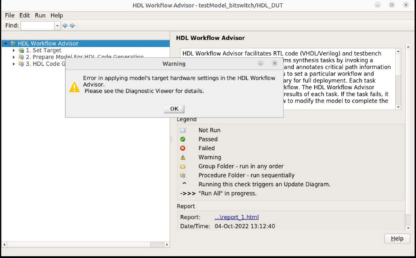
<figcaption>
<p><span class="caption-number">Figure 7 </span><span class="caption-text">Expected HDL Workflow Advisor Warning</span><a class="headerlink" href="#id7" title="Link to this image"></a></p>
</figcaption>
</figure>
<p><strong>2.6</strong> Select IP Core Generation, choose the desired project and carrier from
the dropdown list and check the Allow unsupported version box. Change the
project folder name if desired. Finally press the <code class="docutils literal notranslate"><span class="pre">Run</span> <span class="pre">this</span> <span class="pre">Task</span></code> button.</p>
<figure class="align-default" id="id8">
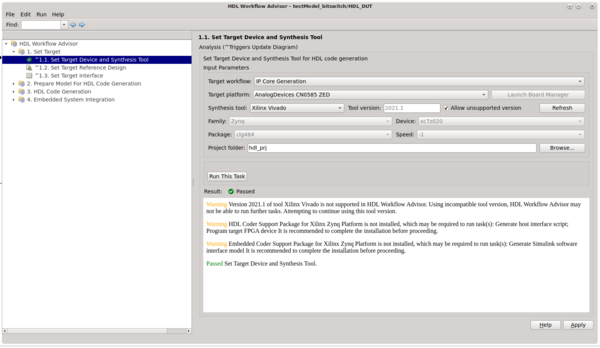
<figcaption>
<p><span class="caption-number">Figure 8 </span><span class="caption-text">Set Target Device and Synthesis Tool</span><a class="headerlink" href="#id8" title="Link to this image"></a></p>
</figcaption>
</figure>
<p><strong>2.7</strong> Choose the RX, RX-TX or TX configuration, then run the task.</p>
<figure class="align-default" id="id9">
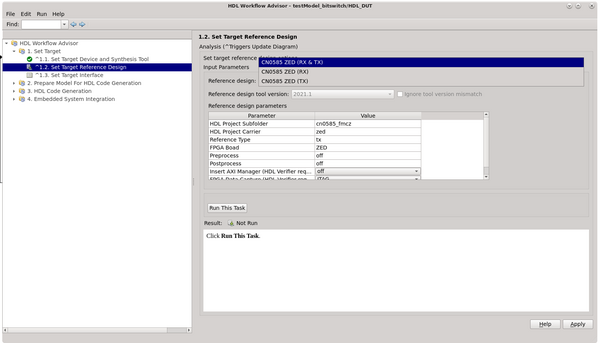
<figcaption>
<p><span class="caption-number">Figure 9 </span><span class="caption-text">Set Target Reference Design</span><a class="headerlink" href="#id9" title="Link to this image"></a></p>
</figcaption>
</figure>
<p><strong>2.8</strong> Assign the data ports as described in Figure 10 and Figure 11, add as
many Input/Output registers as you need. Figure 9 and Figure 10 shows data ports
for TX configuration address.</p>
<figure class="align-default" id="id10">
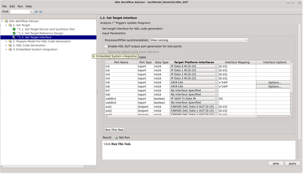
<figcaption>
<p><span class="caption-number">Figure 10 </span><span class="caption-text">Set Input Target Interface</span><a class="headerlink" href="#id10" title="Link to this image"></a></p>
</figcaption>
</figure>
<figure class="align-default" id="id11">
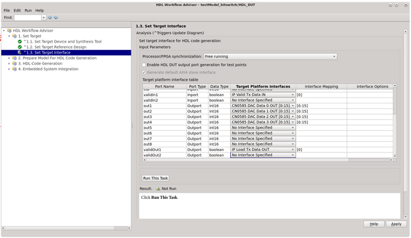
<figcaption>
<p><span class="caption-number">Figure 11 </span><span class="caption-text">Set Output Target Interface</span><a class="headerlink" href="#id11" title="Link to this image"></a></p>
</figcaption>
</figure>
<p>For RX and RX-TX port assignment is done similarly according to Table 2 and Table 3.
Table 1 shows port descriptions for HDL DUT Tx Reference Design.</p>
<p>AXI registers are defined in the Simulink model as input or
output ports (AXI-lite option is selected in “Target Platform Interfaces”
column. Register addresses are set in “Interface Mapping” column and written
like x”&lt;100, or another 9-bit hex address&gt;”.) AXI registers that are input ports
are write-only, and AXI registers that are output ports are read-only. If you
connect those two together in the model, you now have a read-only register
connected to the write-only register so it is readable, but at a different address.</p>
<figure class="align-default" id="id12">
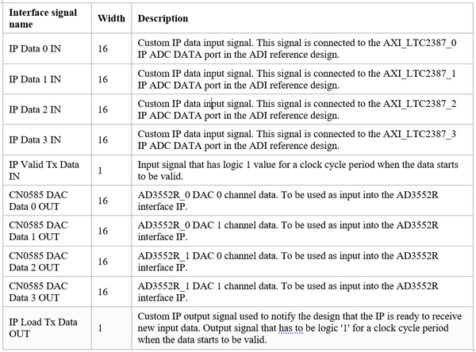
<figcaption>
<p><span class="caption-number">Figure 12 </span><span class="caption-text">HDL DUT Ports for Transmit Reference Design (Tx)</span><a class="headerlink" href="#id12" title="Link to this image"></a></p>
</figcaption>
</figure>
<figure class="align-default" id="id13">
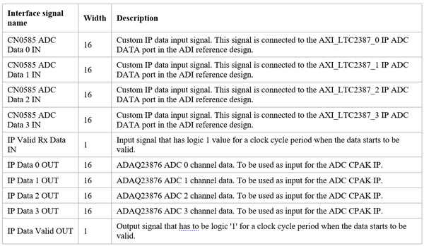
<figcaption>
<p><span class="caption-number">Figure 13 </span><span class="caption-text">HDL DUT Ports for Receive Reference Design (Rx)</span><a class="headerlink" href="#id13" title="Link to this image"></a></p>
</figcaption>
</figure>
<figure class="align-default" id="id14">
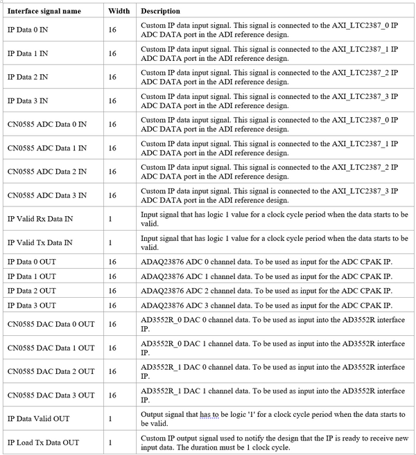
<figcaption>
<p><span class="caption-number">Figure 14 </span><span class="caption-text">HDL DUT Ports for Receive-Transmit Reference Design (Rx-Tx)</span><a class="headerlink" href="#id14" title="Link to this image"></a></p>
</figcaption>
</figure>
<ul class="simple">
<li><p>The CN0585 ADC DATA &lt;x&gt; IN is the data in offset binary format captured by the
ADC interface IP. IP sends the data at a variable sample rate (default is
15MHz but can be changed using the IIO Oscilloscope/ Python) along with the
validIn&lt;x&gt; signal which has the logic value 1 for a clock period (8.33ns) when
the data has changed.</p></li>
<li><p>IP DATA &lt;x&gt; OUT is the data in offset binary format sent to the DAC interface IP.
Data must be sent at 15MSPS when both channels are enabled or at 30MSPS
when only one channel is enabled. The validOut&lt;x&gt; signal should have the same
behavior as validIn. If you make changes to the data captured by the adc
(delay for 1 clock period) and want to send it to the dac output, make sure
you delay the validOut signal at the same time. If the feedback resistors are
placed in the default position, which is +/-10V, a 0000h code will represent
-10.382V and a ffffh code will represent 10.380V as described in Table 4.</p></li>
</ul>
<figure class="align-default" id="id15">
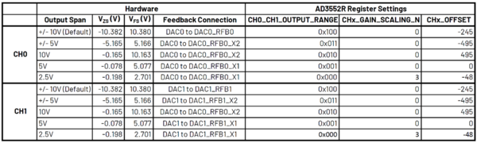
<figcaption>
<p><span class="caption-number">Figure 15 </span><span class="caption-text">AD3552R DAC Output Span Configuration</span><a class="headerlink" href="#id15" title="Link to this image"></a></p>
</figcaption>
</figure>
<p><strong>2.9</strong> Run the task, as shown in Figure 12.</p>
<figure class="align-default" id="id16">
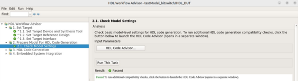
<figcaption>
<p><span class="caption-number">Figure 16 </span><span class="caption-text">Check Model Settings</span><a class="headerlink" href="#id16" title="Link to this image"></a></p>
</figcaption>
</figure>
<p><strong>2.10</strong> Select Verilog for the HDL Code Generation Settings, then run task as
shown in Figure 13.</p>
<figure class="align-default" id="id17">
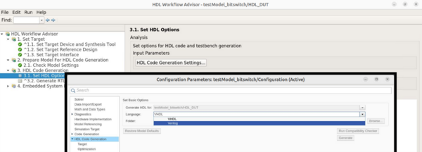
<figcaption>
<p><span class="caption-number">Figure 17 </span><span class="caption-text">Set HDL Options</span><a class="headerlink" href="#id17" title="Link to this image"></a></p>
</figcaption>
</figure>
<p><strong>2.11</strong> Check the Enable readback on AXI4 slave write registers as described in
Figure 14. Then run task.</p>
<figure class="align-default" id="id18">
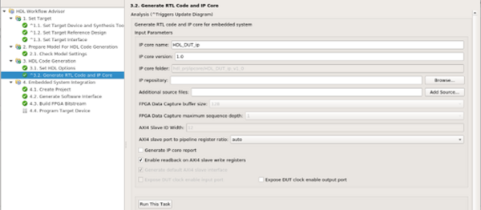
<figcaption>
<p><span class="caption-number">Figure 18 </span><span class="caption-text">Generate RTL code and IP Core</span><a class="headerlink" href="#id18" title="Link to this image"></a></p>
</figcaption>
</figure>
<p><strong>2.12</strong> Run the task (this will create the Vivado block design in the
hdl_prj/vivado_ip_prj folder, or the project folder name that was chosen in
1.6), as shown in Figure 15.</p>
<figure class="align-default" id="id19">
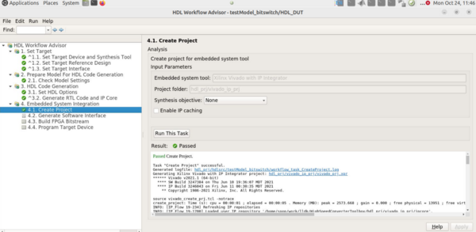
<figcaption>
<p><span class="caption-number">Figure 19 </span><span class="caption-text">Create Project</span><a class="headerlink" href="#id19" title="Link to this image"></a></p>
</figcaption>
</figure>
<p><strong>2.13</strong> Run the task in Figure 16.</p>
<figure class="align-default" id="id20">
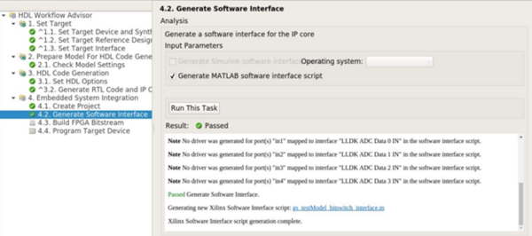
<figcaption>
<p><span class="caption-number">Figure 20 </span><span class="caption-text">Generate Software Interface</span><a class="headerlink" href="#id20" title="Link to this image"></a></p>
</figcaption>
</figure>
<p><strong>2.14</strong> Choose the “Custom” option for the Tcl file synthesis build, then
Browse for the adi_build.tcl file located under HighSpeedConverterToolbox/CI/scripts,
as shown in Figure 17. A bash prompt will open, and you can see the entire build process log file,
as shown in Figure 17 and Figure 18. This step usually takes about an hour or more.</p>
<figure class="align-default" id="id21">
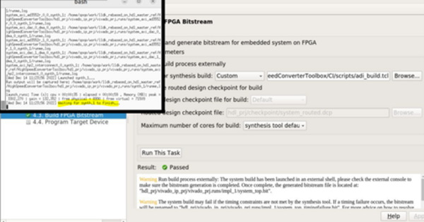
<figcaption>
<p><span class="caption-number">Figure 21 </span><span class="caption-text">Build FPGA Bitstream</span><a class="headerlink" href="#id21" title="Link to this image"></a></p>
</figcaption>
</figure>
<figure class="align-default" id="id22">
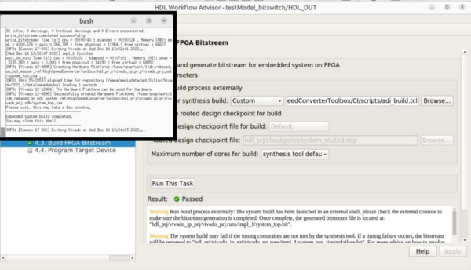
<figcaption>
<p><span class="caption-number">Figure 22 </span><span class="caption-text">Build FPGA Bitstream Task Complete Message</span><a class="headerlink" href="#id22" title="Link to this image"></a></p>
</figcaption>
</figure>
<p>In the end you will get this message, and the generated BOOT.BIN file will be
located in:</p>
<blockquote>
<div><div class="highlight-default notranslate"><div class="highlight"><pre><span></span><span class="o">/</span><span class="n">HighSpeedConverterToolbox</span><span class="o">/</span><span class="n">hdl_prj</span><span class="o">/</span><span class="n">vivado_ip_prj</span><span class="o">/</span><span class="n">boot</span>
</pre></div>
</div>
</div></blockquote>
<p><strong>2.15</strong> Program target device</p>
<p>Tab 4.4 in the HDL Workflow Advisor is incompatible with The ADI SD card flow.
Instead, choose one of the following methods to update the BOOT.BIN file on the
SD card (BOOT.BIN with register access found in <a class="reference download internal" download="" href="../../../../_downloads/1f41739e51b45c0cd90103c0950693e6/sd_card_config_files_revb.zip"><code class="xref download docutils literal notranslate"><span class="pre">SD</span> <span class="pre">Card</span> <span class="pre">Configuration</span> <span class="pre">Files</span></code></a>).
After the BOOT.BIN file is generated, you have 2 options:</p>
<blockquote>
<div><ol class="arabic">
<li><p>Copy the BOOT.BIN file on the SD Card directly.</p></li>
<li><p>Send it via network using a terminal (CMD for Windows machine).</p></li>
<li><p>Go to the folder where the BOOT.BIN file is:</p>
<div class="highlight-default notranslate"><div class="highlight"><pre><span></span><span class="n">HighSpeedConverterToolbox</span><span class="o">/</span><span class="n">hdl_prj</span><span class="o">/</span><span class="n">vivado_ip_prj</span><span class="o">/</span><span class="n">boot</span>
</pre></div>
</div>
</li>
<li><p>Run this command:</p>
<div class="highlight-default notranslate"><div class="highlight"><pre><span></span><span class="n">scp</span> <span class="n">BOOT</span><span class="o">.</span><span class="n">BIN</span> <span class="n">root</span><span class="o">@&lt;</span><span class="n">your_board_ip</span><span class="o">&gt;</span><span class="p">:</span><span class="o">/</span><span class="n">boot</span>
</pre></div>
</div>
</li>
<li><p>Finally, reboot the board.</p></li>
</ol>
</div></blockquote>
</section>
<section id="register-access-options">
<h3>Register Access Options<a class="headerlink" href="#register-access-options" title="Link to this heading"></a></h3>
<p>AXI-Lite registers in HDL_DUT can be accessed using one of the below three
options:</p>
<section id="pyadi-iio">
<h4>PyADI-IIO<a class="headerlink" href="#pyadi-iio" title="Link to this heading"></a></h4>
<p>Get the PyADI-IIO repo, and switch to the compatible branch.</p>
<div class="code-shell"><div><div class="no-select float-left highlight-default notranslate"><div class="highlight"><pre><span></span>~$
</pre></div>
</div>
<div class="highlight-bash notranslate"><div class="highlight"><pre><span></span>git<span class="w"> </span>clone<span class="w"> </span>https://github.com/analogdevicesinc/pyadi-iio.git
</pre></div>
</div>
<div class="clear-left"></div></div><div><div class="no-select float-left highlight-default notranslate"><div class="highlight"><pre><span></span>~$
</pre></div>
</div>
<div class="highlight-bash notranslate"><div class="highlight"><pre><span></span><span class="nb">cd</span><span class="w"> </span>pyadi-iio
</pre></div>
</div>
<div class="clear-left"></div></div><div><div class="no-select float-left highlight-default notranslate"><div class="highlight"><pre><span></span>~/pyadi-iio$
</pre></div>
</div>
<div class="highlight-bash notranslate"><div class="highlight"><pre><span></span>git<span class="w"> </span>checkout<span class="w"> </span>cn0585_v1
</pre></div>
</div>
<div class="clear-left"></div></div></div><p>Setup Python and run the example file. The path in the first line should be
replaced with the location where you cloned the pyadi-iio repository.</p>
<div class="code-shell"><div><div class="no-select highlight-text notranslate"><div class="highlight"><pre><span></span>export PYTHONPATH=C:\work\python_LLDK\documentation_clone\pyadi-iio
</pre></div>
</div>
<div class="clear-left"></div></div><div><div class="no-select float-left highlight-default notranslate"><div class="highlight"><pre><span></span><span class="n">C</span><span class="p">:</span>\<span class="n">Users</span>\<span class="n">user</span>\<span class="n">pyadi</span><span class="o">-</span><span class="n">iio</span><span class="o">&gt;</span>
</pre></div>
</div>
<div class="highlight-ps1 notranslate"><div class="highlight"><pre><span></span><span class="n">pip</span> <span class="n">install</span> <span class="p">.</span>
</pre></div>
</div>
<div class="clear-left"></div></div><div><div class="no-select float-left highlight-default notranslate"><div class="highlight"><pre><span></span><span class="n">C</span><span class="p">:</span>\<span class="n">Users</span>\<span class="n">user</span>\<span class="n">pyadi</span><span class="o">-</span><span class="n">iio</span><span class="o">&gt;</span>
</pre></div>
</div>
<div class="highlight-ps1 notranslate"><div class="highlight"><pre><span></span><span class="n">pip</span> <span class="n">install</span> <span class="n">-r</span> <span class="n">requirements</span><span class="p">.</span><span class="n">txt</span>
</pre></div>
</div>
<div class="clear-left"></div></div><div><div class="no-select float-left highlight-default notranslate"><div class="highlight"><pre><span></span><span class="n">C</span><span class="p">:</span>\<span class="n">Users</span>\<span class="n">user</span>\<span class="n">pyadi</span><span class="o">-</span><span class="n">iio</span><span class="o">&gt;</span>
</pre></div>
</div>
<div class="highlight-ps1 notranslate"><div class="highlight"><pre><span></span><span class="n">pip</span> <span class="n">install</span> <span class="n">-r</span> <span class="n">requirements_dev</span><span class="p">.</span><span class="n">txt</span>
</pre></div>
</div>
<div class="clear-left"></div></div><div><div class="no-select float-left highlight-default notranslate"><div class="highlight"><pre><span></span><span class="n">C</span><span class="p">:</span>\<span class="n">Users</span>\<span class="n">user</span>\<span class="n">pyadi</span><span class="o">-</span><span class="n">iio</span><span class="o">&gt;</span>
</pre></div>
</div>
<div class="highlight-ps1 notranslate"><div class="highlight"><pre><span></span><span class="n">python</span> <span class="n">examples</span><span class="p">/</span><span class="n">cn0585_fmcz_example</span><span class="p">.</span><span class="n">py</span> <span class="n">ip</span><span class="p">:&lt;</span><span class="n">your_board_ip</span><span class="p">&gt;</span>
</pre></div>
</div>
<div class="clear-left"></div></div></div><p>The console output will contain these 2 new lines:</p>
<div class="highlight-default notranslate"><div class="highlight"><pre><span></span><span class="n">AXI4</span><span class="o">-</span><span class="n">Lite</span> <span class="mh">0x108</span> <span class="n">register</span> <span class="n">value</span><span class="p">:</span> <span class="mh">0x2</span>
<span class="n">AXI4</span><span class="o">-</span><span class="n">Lite</span> <span class="mh">0x10c</span> <span class="n">register</span> <span class="n">value</span><span class="p">:</span> <span class="mh">0xB</span>
</pre></div>
</div>
<p>These are the functions that were added to be able to access the HDL_DUT IP
registers trough AXI4-Lite:</p>
<div class="highlight-default notranslate"><div class="highlight"><pre><span></span><span class="k">if</span> <span class="n">hdl_dut_write_channel</span><span class="o">.</span><span class="n">check_matlab_ip</span><span class="p">()</span> <span class="p">:</span>
    <span class="n">hdl_dut_write_channel</span><span class="o">.</span><span class="n">axi4_lite_register_write</span><span class="p">(</span><span class="mh">0x100</span><span class="p">,</span> <span class="mh">0x2</span><span class="p">)</span>
    <span class="n">hdl_dut_write_channel</span><span class="o">.</span><span class="n">axi4_lite_register_write</span><span class="p">(</span><span class="mh">0x104</span><span class="p">,</span> <span class="mh">0xB</span><span class="p">)</span>

<span class="k">if</span> <span class="n">hdl_dut_write_channel</span><span class="o">.</span><span class="n">check_matlab_ip</span><span class="p">()</span> <span class="p">:</span>
    <span class="n">reg_value</span> <span class="o">=</span> <span class="n">hdl_dut_read_channel</span><span class="o">.</span><span class="n">axi4_lite_register_read</span><span class="p">(</span><span class="mh">0x108</span><span class="p">)</span>
    <span class="n">reg_value1</span> <span class="o">=</span> <span class="n">hdl_dut_read_channel</span><span class="o">.</span><span class="n">axi4_lite_register_read</span><span class="p">(</span><span class="mh">0x10C</span><span class="p">)</span>
    <span class="nb">print</span><span class="p">(</span><span class="s2">&quot;AXI4-Lite 0x108 register value:&quot;</span><span class="p">,</span> <span class="n">reg_value</span><span class="p">)</span>
    <span class="nb">print</span><span class="p">(</span><span class="s2">&quot;AXI4-Lite 0x10c register value:&quot;</span><span class="p">,</span> <span class="n">reg_value1</span><span class="p">)</span>
</pre></div>
</div>
</section>
<section id="matlab">
<h4>MATLAB<a class="headerlink" href="#matlab" title="Link to this heading"></a></h4>
<ul>
<li><p>Open the CN0585StreamingTest.m file in Matlab</p></li>
<li><p>Update the board_ip variable with your board IP.</p></li>
<li><p>Run the CN0585StreamingTest.m example.
The output shown in Figure 19 can be observed in the Command Window.</p>
<blockquote>
<div><figure class="align-default" id="id23">
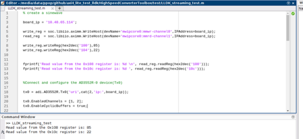
<figcaption>
<p><span class="caption-number">Figure 23 </span><span class="caption-text">MATLAB Command Window Output</span><a class="headerlink" href="#id23" title="Link to this image"></a></p>
</figcaption>
</figure>
<p>These are the functions that were added to be able to access the HDL DUT IP
registers trough AXI4-Lite:</p>
<div class="highlight-matlab notranslate"><div class="highlight"><pre><span></span><span class="n">write_reg</span><span class="w"> </span><span class="p">=</span><span class="w"> </span><span class="n">soc</span><span class="p">.</span><span class="n">libiio</span><span class="p">.</span><span class="n">aximm</span><span class="p">.</span><span class="n">WriteHost</span><span class="p">(</span><span class="n">devName</span><span class="p">=</span><span class="s">&#39;mwipcore0:mmwrchannel0&#39;</span><span class="p">,</span><span class="n">IPAddress</span><span class="p">=</span><span class="n">board_ip</span><span class="p">);</span>
<span class="n">read_reg</span><span class="w"> </span><span class="p">=</span><span class="w"> </span><span class="n">soc</span><span class="p">.</span><span class="n">libiio</span><span class="p">.</span><span class="n">aximm</span><span class="p">.</span><span class="n">WriteHost</span><span class="p">(</span><span class="n">devName</span><span class="p">=</span><span class="s">&#39;mwipcore0:mmrdchannel1&#39;</span><span class="p">,</span><span class="n">IPAddress</span><span class="p">=</span><span class="n">board_ip</span><span class="p">);</span>
<span class="n">write_reg</span><span class="p">.</span><span class="n">writeReg</span><span class="p">(</span><span class="nb">hex2dec</span><span class="p">(</span><span class="s">&#39;100&#39;</span><span class="p">),</span><span class="mi">85</span><span class="p">)</span>
<span class="n">write_reg</span><span class="p">.</span><span class="n">writeReg</span><span class="p">(</span><span class="nb">hex2dec</span><span class="p">(</span><span class="s">&#39;104&#39;</span><span class="p">),</span><span class="mi">22</span><span class="p">)</span>
</pre></div>
</div>
</div></blockquote>
</li>
</ul>
</section>
<section id="simulink">
<h4>Simulink<a class="headerlink" href="#simulink" title="Link to this heading"></a></h4>
<ul>
<li><p>From the HighSpeedConverterToolbox/test folder open the
cn0585_host_axi4_lite_read_write_example.slx file.</p></li>
<li><p>Update the IP address for all the blocks existing in the host diagram.</p></li>
<li><p>Modify the value in the constant block to write to the register. Open the
scope block to read the register.</p>
<blockquote>
<div><figure class="align-default" id="id24">
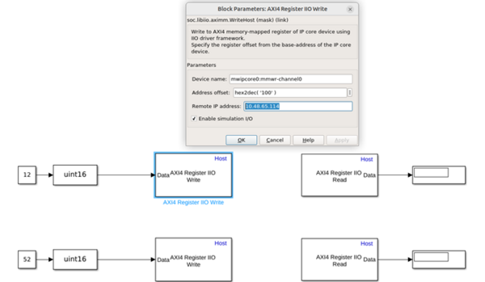
<figcaption>
<p><span class="caption-number">Figure 24 </span><span class="caption-text">Host Simulink Block Diagram</span><a class="headerlink" href="#id24" title="Link to this image"></a></p>
</figcaption>
</figure>
</div></blockquote>
</li>
</ul>
</section>
</section>
</section>
</section>


          </div>
              <div class="related">
                &nbsp;
    <a href="../digital-template/index.html" title="Previous document (Alt+Shift+LeftArrow)" class="prev">Digital Template Model</a>
    <a href="../../eval-cn0585-fmcz/index.html" title="Next document (Alt+Shift+RightArrow)" class="next">EVAL-CN0585-FMCZ</a>
              </div>
          
        </div>
      </div>
  </div>

  <label id="cancel-area-show-toc" for="input-show-toc"></label>
  <label id="cancel-area-show-localtoc" for="input-show-localtoc"></label>
    <footer>
      &#169;2025, Analog Devices, Inc.
      
      |
      Made with <a href="https://www.sphinx-doc.org/">Sphinx</a>
      &amp; <a href="https://github.com/analogdevicesinc/doctools">Doctools</a>
      
    </footer>
  </body>
</html>